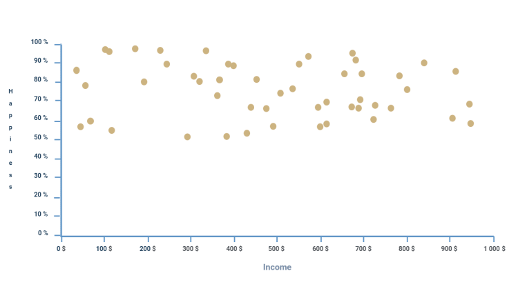

Nous possédons tout le nécessaire pour placer les points sur le graphique, nous allons maintenant pouvoir finalement créer la fonction qui s’en occupera.
Appelons cette fonction placePoints(), celle-ci prendra en paramètre points, le tableau des points, et marks_x, scale_x, marks_y, scale_y qui sont les mêmes valeurs données lors de la création des axes, et dont nous avons besoin pour placer correctement nos points à l’échelle.
Voici le prototype de fonction correspondant aux consignes :
See the Pen Untitled by OpenSpirit (@OpenSpirit) on CodePen.
Par ergonomie, au sein de la fonction nous allons créer 2 variables scale_x et scale_y qui seront les échelles dont nous avons besoin pour adapter les coordonnées natives au graphique.
La valeur maximale de chaque axe est calculable en multipliant le nombre de mesures marks et l’échelle des mesures scale ensemble, et en divisant cette valeur par la taille en pixel de l’axe, nous obtenons l’échelle pour transformer la coordonnée native en coordonnées adaptées au graphique.
See the Pen Untitled by OpenSpirit (@OpenSpirit) on CodePen.
Nous allons ensuite ajouter une boucle « forEach » qui va itérer à travers chaque point du tableau, ce sera donc la boucle pour placer les points.
La première chose que nous devons accomplir dans cette boucle va être de calculer les coordonnées mises à l’échelle. Nous allons donc créer en même temps que la boucle 2 variables en son sein qui représenteront les coordonnées transformées.
See the Pen Untitled by OpenSpirit (@OpenSpirit) on CodePen.
En prenant en compte la marge, l’inversion de l’axe Y et la mise à l’échelle avec les variables transform_x et transform_y, le résultat des coordonnées adaptées au graphique devrait correspondre au calcul suivant :
See the Pen Untitled by OpenSpirit (@OpenSpirit) on CodePen.
Utilisons ces coordonnées avec la méthode arc() que nous avions précédemment vue, ainsi nous pouvons ajouter le code suivant qui dessinera sur le graphique les points à chaque itération :
See the Pen Untitled by OpenSpirit (@OpenSpirit) on CodePen.
Enfin, voici la ligne que nous allons taper pour afficher nos points :
See the Pen Untitled by OpenSpirit (@OpenSpirit) on CodePen.
Lien ReplitLes valeurs étant aléatoires, il serait complexe de vérifier correctement le bon fonctionnement de la disposition des points. Néanmoins, le code peut être considéré valide si le résultat est semblable à celui-ci dessous :
N’oubliez pas que la disposition des points dépend des limitations fournies en paramètres à la fonction generatePoints().